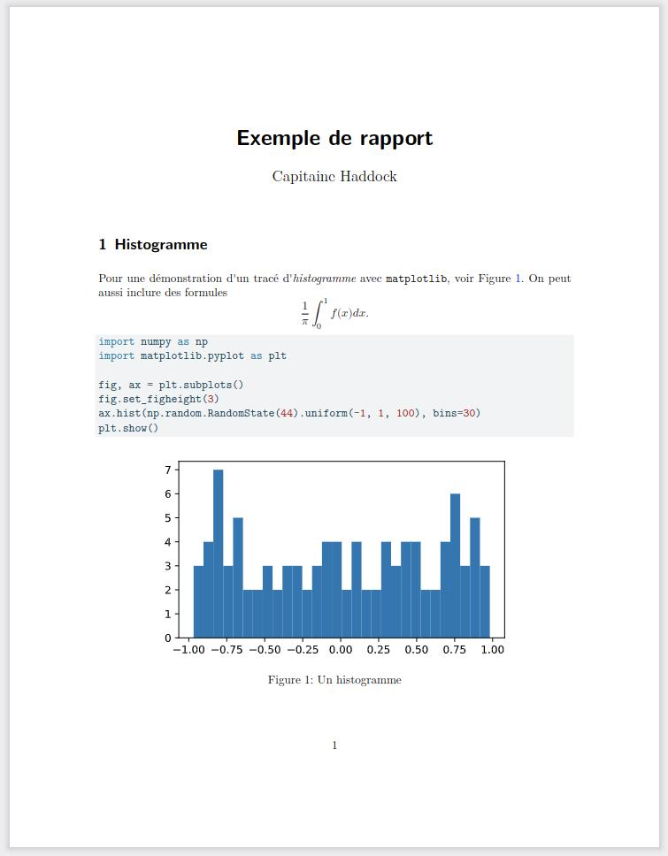
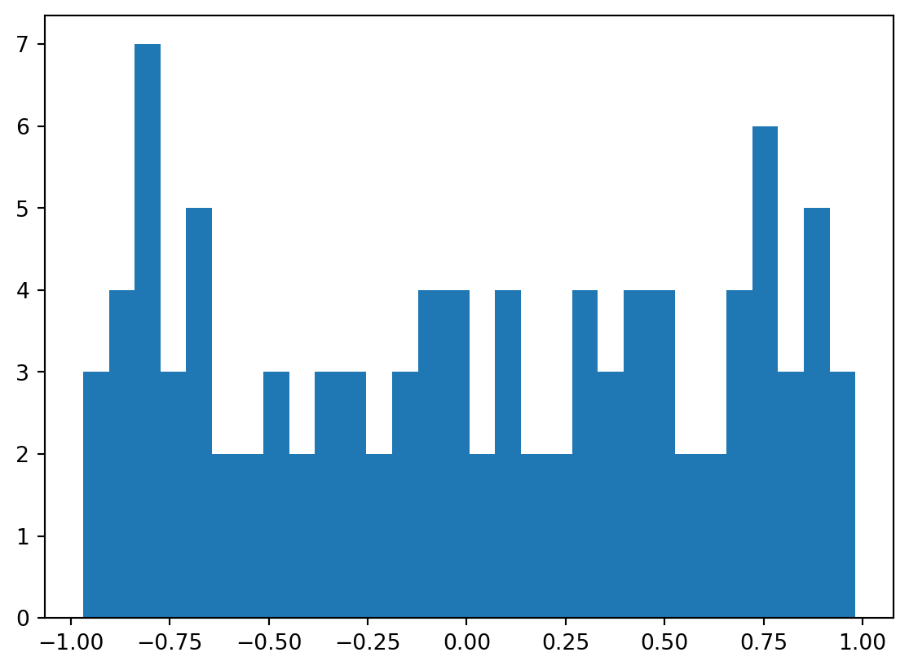

Quarto est un cadre d’édition unifié pour la science des données, qui combine votre code, ses résultats et vos commentaires. L’écriture d’un rapport de TP, d’un compte rendu de projet ou même de diapositives pour une présentation peut se faire facilement sous Quarto, avec un export en .pdf (ou en .html). Dans Quarto, vous pouvez écrire du code dans différents langages de programmation, tels que Python, R, Julia et bien d’autres. Vous pouvez également inclure des équations mathématiques (avec \LaTeX), des images (svg, png, jpg, etc.), des tableaux, listes, etc.
Pour générer un document avec Quarto, vous devez écrire le contenu dans un fichier d’extension .qmd, qui est un format de texte simple qui sera converti en d’autres formats, tels que HTML ou PDF. Dans le fichier .qmd, vous pouvez inclure des blocs de code, qui seront exécutés ou non lorsque vous générez le document final. Vous pouvez décider de masquer ou d’afficher les parties de code dans les sorties finales.
Référence : le cours d’informatique d’Arthur Turrell pour les économistes https://aeturrell.github.io/coding-for-economists/intro.html.
Mise en route
Sur les machine de la faculté des Sciences
Quarto est déjà installé sur les machines de l’université! Il n’y a qu’à installer l’extension pour Visual Studio Code, voir Section 1.3.
Installation sur votre machine personnelle
Sur votre machine, vous devez vous rendre sur le site web de Quarto et suivre les instructions d’installation avant de commencer. Vous pouvez vérifier que vous avez correctement installé Quarto en utilisant la commande quarto check install sur la ligne de commande.
Visual Studio Code
Vous trouverez l’extension Quarto pour Visual Studio Code. Cette extension crée un bouton spécial dans Visual Studio Code appelé “render” qui vous montre à quoi ressemblera la sortie côte à côte avec l’entrée, ou encore “preview” (ou avec Ctrl + Shift + k). Vous pouvez aussi utiliser le raccourci clavier Ctrl + Shift + p puis sélectionner “Quarto preview” par exemple.
Rapports automatisés avec Quarto
La première étape est de créer un fichier markdown spécial, avec l’extension de fichier .qmd. Pour en savoir plus sur markdown, voir le TP markdown. Les blocs de code qui ont une syntaxe spéciale sont exécutés et leurs résultats sont inclus dans toutes les sorties.
Vous pouvez également ajouter du code (Python, R, JavaScript, etc.) aux documents pour créer dynamiquement des figures, des tableaux, etc., puis rendre les documents à leur format final à l’aide de Quarto.
Un exemple minimal d’un rapport écrit avec du contenu markdown
Commençons par créer notre exemple minimal. Le code et le markdown suivants forment le contenu d’un fichier appelé rapport_tp.qmd1 :
1 et le rendu donne alors un fichier .pdf ressemblant à cela :
---
title: "Exemple de rapport"
author: "Capitaine Haddock"
format: pdf
toc: false
number-sections: true
---
## Histogramme
Pour une démonstration d'un tracé d'*histogramme* avec `matplotlib`, voir @fig-hist. On peut aussi inclure des formules
$$
\frac 1 \pi \int_{0}^{1} f(x) dx.
$$
```{python}
#| label: fig-hist
#| fig-cap: "Un histogramme"
import numpy as np
import matplotlib.pyplot as plt
fig, ax = plt.subplots()
fig.set_figheight(3)
ax.hist(np.random.RandomState(44).uniform(-1, 1, 100), bins=30)
plt.show()
```Cet exemple contient des types contenu importants :
- Une en-tête YAML délimitée par
---et contenant les options de rendu du document. - Des blocs de code Python délimités par
```(AltGr+7AltGr+7 sur les claviers français). Le mot-clé{python}indique à Quarto que le bloc de code est enpython. - Des formules délimitées par
$$ou$. - Du markdown mélangé avec une mise en forme de texte simple comme
# headinget_italics_.
Rendu dans des documents de sortie
Pour convertir le rapport ci-dessus en un fichier .pdf de sortie, enregistrez-le sous rapport_tp.qmd. Si vous utilisez l’extension Visual Studio Code quarto (recommandée), vous pouvez appuyer sur le bouton Preview (Ctrl+Shift+KCtrl+Shift+K) ou sur le bouton Quarto Render Project (Ctrl+Shift+pCtrl+Shift+p et chercher la commande dans la liste).
Une alternative est d’exécuter la commande suivante dans un terminal (dans le même répertoire que le fichier) :
quarto render rapport_tp.qmdExercice 1 Créer un PDF en enregistrant le markdown ci-dessus dans un fichier appelé rapport_tp.qmd.
Attention: si vous obtenez une erreur indiquant que le noyau Jupyter n’a pas été trouvé, vérifiez d’abord que vous avez installé Jupyter Lab, puis vérifiez le nom de votre noyau Jupyter en utilisant jupyter kernelspec list sur la ligne de commande. Vous devez spécifier correctement le nom de votre noyau Jupyter dans l’en-tête du document (dans l’exemple ci-dessus, il est appelé ‘python3’, qui est le noyau par défaut).
Maintenant, puisque nous avons spécifié pdf dans l’en-tête de notre fichier, nous avons automatiquement obtenu un PDF. Cependant, une grande variété de formats de sortie sont disponibles. Par exemple, HTML
quarto render rapport_tp.qmd --to htmlLa syntaxe de base consiste à écrire --to outputformat à la fin de la commande render.
Exercice 2 Créer un rapport HTML en enregistrant le markdown ci-dessus dans un fichier appelé rapport_tp.qmd, en modifiant l’entête et en exécutant ensuite la commande quarto render avec l’option --to html.
Que se passe-t-il avec le menu sur le côté droit lorsque vous ajoutez des en-têtes supplémentaires en utilisant la syntaxe markdown ## ?
Options d’exécution de bloc de code
Il existe différentes options pour l’exécution du bloc de code. Pour inclure un bloc de code qui ne sera pas exécuté, utilisez simplement la syntaxe markdown régulière (c’est-à-dire un bloc qui commence par ```python). Sinon, vous avez des options riches pour savoir si vous souhaitez afficher le code d’entrée, uniquement les résultats, les deux ou aucun des deux (tout en exécutant toujours le code).
Pour un exemple de sortie de code où l’entrée n’est pas affichée, le code ci-dessous n’affichera que la figure de sortie en utilisant l’option echo: false.
```{python}
#| echo: false
#| layout-ncol: 1
import numpy as np
import matplotlib.pyplot as plt
rng = np.random.RandomState(44)
uniform_data = rng.uniform(-1, 1, 100)
fig, ax = plt.subplots()
ax.hist(uniform_data, bins=30)
plt.show()
```En mettant l’option echo: true on affiche le code source dans la sortie, et l’on aurait alors l’effet suivant:
import numpy as np
import matplotlib.pyplot as plt
rng = np.random.RandomState(44)
uniform_data = rng.uniform(-1, 1, 100)
fig, ax = plt.subplots()
ax.hist(uniform_data, bins=30)
plt.show()
Voici quelques options pour les blocs de code:
| Option | Description |
|---|---|
eval |
Évaluer le bloc de code (si faux, affiche simplement le code dans la sortie). |
echo |
Inclure le code source dans la sortie. |
output |
Inclure les résultats de l’exécution du code dans la sortie (true, false). |
warning |
Inclure les avertissements dans la sortie. |
error |
Inclure les erreurs dans la sortie (notez que cela implique que les erreurs d’exécution du code ne bloqueront pas le traitement du document). |
include |
Option générale pour empêcher toute sortie (code ou résultats) d’être incluse (par exemple, include: false supprime toute sortie du bloc de code). |